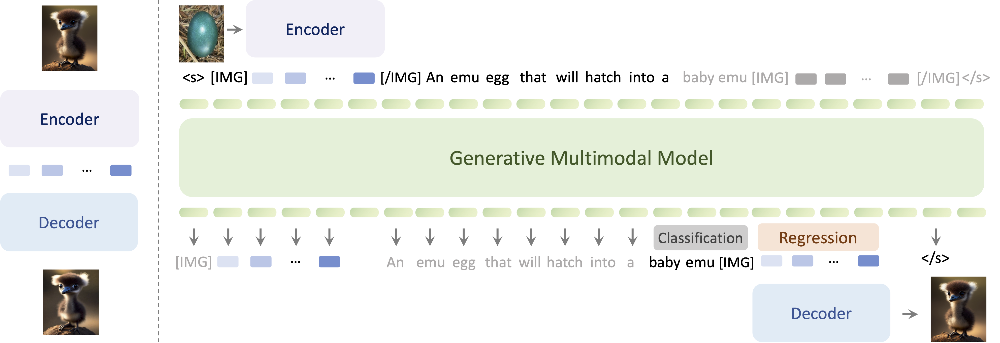

The human ability to easily solve multimodal tasks in context (i.e., with only a few demonstrations or simple instructions), is what current multimodal systems have largely struggled to imitate. In this work, we demonstrate that the task-agnostic in-context learning capabilities of large multimodal models can be significantly enhanced by effective scaling-up. We introduce Emu2, a generative multimodal model with 37 billion parameters, trained on large-scale multimodal sequences with a unified autoregressive objective. Emu2 exhibits strong multimodal in-context learning abilities, even emerging to solve tasks that require on-the-fly reasoning, such as visual prompting and object-grounded generation. The model sets a new record on multiple multimodal understanding tasks in few-shot settings. When instruction-tuned to follow specific instructions, Emu2 further achieves new state-of-the-art on challenging tasks such as question answering benchmarks for large multimodal models and open-ended subject-driven generation. These achievements demonstrate that Emu2 can serve as a base model and general-purpose interface for a wide range of multimodal tasks. Code and models are publicly available to facilitate future research.
Zero-shot subject-driven generation
Emu2 learns with a predict-the-next-element objective in multimodality. Each image in the multimodal sequence is tokenized into embeddings via a visual encoder, and then interleaved with text tokens for autoregressive modeling. The regressed visual embeddings will be decoded into an image or a video by a visual decoder. Compared to Emu1, Emu2 embraces a simpler framework, better visual decoder, and scales up to 37 billion parameters.
@article{Emu,
title={Generative Pretraining in Multimodality},
author={Sun, Quan and Yu, Qiying and Cui, Yufeng and Zhang, Fan and Zhang, Xiaosong and Wang, Yueze and Gao, Hongcheng and Liu, Jingjing and Huang, Tiejun and Wang, Xinlong},
publisher={arXiv preprint arXiv:2307.05222},
year={2023},
}